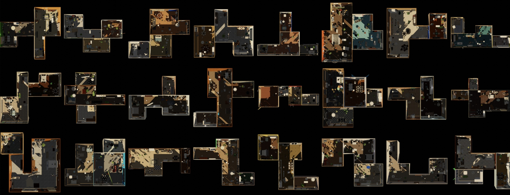
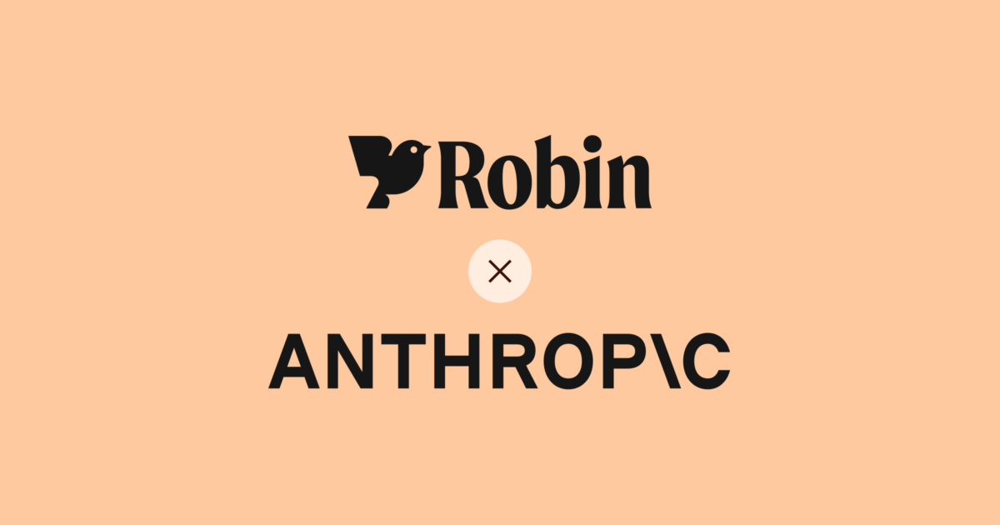
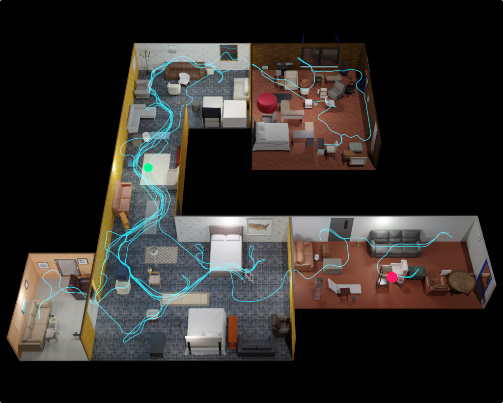
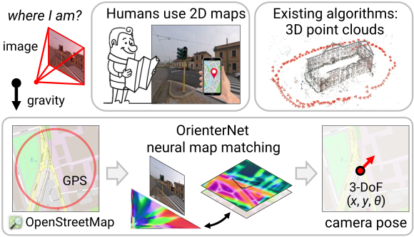

Highlights

CPU-runnable physical simulation for robotics
Built a Blender-based robotics simulation library covering navigation, rigid-body physics, force interaction, masks, point clouds, and other labeling modalities. [code]

Regulated-domain post-training
Led legal-domain LLM post-training and evaluation work with legal, product, engineering, Anthropic, and AWS collaborators; the post-trained model outperformed OpenAI o1-preview in the legal domain. [news]
Publications
SceneScript: Reconstructing Scenes With An Autoregressive Structured Language Model
ECCV 2024 [paper]

Aria Synthetic Environments Dataset
Project Aria, 2023 [dataset]

OrienterNet: Visual Localization in 2D Public Maps with Neural Matching
CVPR 2023 [paper]
Nerfels: Renderable Neural Codes for Improved Camera Pose Estimation
CVPR Workshops 2022 [paper]
NinjaDesc: Content-Concealing Visual Descriptors via Adversarial Learning
CVPR 2022 [paper]
Implicit Map Augmentation for Relocalization
ECCV Workshops 2022 [paper]
UR2KiD: Unifying Retrieval, Keypoint Detection, and Keypoint Description
arXiv 2020 [paper]
FSA-Net: Learning Fine-Grained Structure Aggregation for Head Pose Estimation From a Single Image
CVPR 2019 [paper]
DAME WEB: DynAmic MEan with Whitening Ensemble Binarization for Landmark Retrieval without Human Annotation
ICCV Workshops 2019 [paper]
SSR-Net: A Compact Soft Stagewise Regression Network for Age Estimation
IJCAI 2018 [paper]
DeepCD: Learning Deep Complementary Descriptors for Patch Representations
ICCV 2017 [paper]
Accumulated Stability Voting: A Robust Descriptor From Descriptors of Multiple Scales
CVPR 2016 [paper]
Education
- PhD in Computer Science, National Taiwan University, 2019
- MS in Applied Physics, National Taiwan University, 2013
- BS in Physics, National Taiwan University, 2011